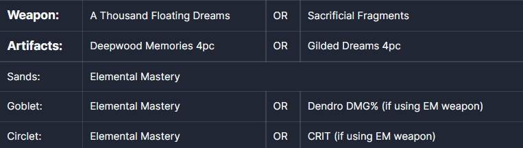
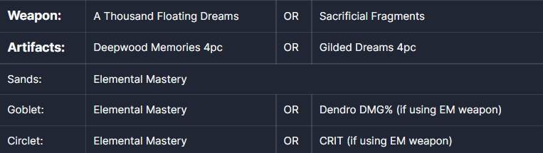

Haru_Liyue
GENSHIN IMPACT VERSION 3.2 NAHIDA GUIDE
Genshin Impact's Sumeru storyline is coming to a close thanks to the recent version
3.2 update. The update also has new gacha character, the Dendro spellcaster Nahida,
with her special support-heavy kit and moves that's sure to please fans of Genshin Impact.
Disclaimer: this guide is still in development.
NAHIDA GUIDE
Nahida's strength is her consistent Dendro spellcasting and affliction via her Elemental
Skill, which has short cooldown. Ditto her Elemental Burst, which helps amplify her team member's
skills and bursts once it's out for a limited time. She isn't that hot when it comes to burst damage,
but that's what her friends are for: be sure to have a hero skilled with burst damage to make use of
Nahida's support kit.
 

SUPPORT BUILD
Weapon(s): A Thousand Floating Dreams, Wandering Evenstar, Magic Guide (F2P), Mappa Mare (F2P), Fruit
of Fulfillment
(F2P)
Artifacts: Deepwood Memories set
Artifact Stats: Elemental Mastery for all, otherwise you can focus on CRIT rate, CRIT Damage, and Energy Recharge.